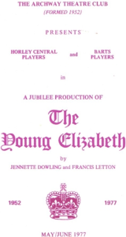

How it all began
In December 1939, three months after war had been declared, Reg Westcott – a teacher at Horley Central School – founded a new amateur dramatic society as part of the school’s Old Scholars’ Association. They called themselves the Horley Central Players, the name was obvious really.
At first they put on plays in the school hall (properly blacked out. of course) but in March 1942 moved their performances to the original Constitutional Hall. This stood at the time on the site now occupied by the NatWest bank. Here they presented two plays which had previously been produced in the school hall. In subsequent years plays were regularly performed in this Hall and the Central Players gradually built up a good reputation for amateur dramatics. 
In 1949 the players obtained for the first time a base of their own, a room in the Community Association Hall in Cheyne Walk.
This Association was also temporarily using some British Rail property, comprising arches of the viaduct carrying Victoria Road over the railway, which during the war had been used for various Civil Defence purposes.
One day, two of the Horley Central Players’ members – Arthur Clermont and John Dilly – went into one of these arches to watch a table-tennis match. After a while the same, thought occurred to both of them: “we could put on plays here!’.
We have a lot for which to thank these two members. Of course, as always happens when a new idea is put to a society, not everybody was in favour. However, Arthur and John were not deterred and a meeting was called at Arthur and Naney’s home where those members who attended decided to proceed with the proposal. Arthur and John believed that the main arch, which had canvas seats and at one end a curtain, already had a theatrical atmosphere.
Nancy says that when they were wondering what to call the Theatre, she suggested that “The Archway” seemed the obvious name: and so it was. They rented the arch from the Community Association.
The premises were not at the time licensed for putting on plays, and it proved easier to get permission for a Theatre Club rather than one offering public performances.
In 1952 the Central Players’ 50th production (A Midsummer Night’s Dream) was put on at the Constitutional Club, but later that year their first play was performed in the present premises of the Archway Theatre.
The new Club persuaded their audience to follow them to the new home and three plays were put on between 2Ist and 26th July. They were:
- Fumed Oak by Noel Coward (Producer: George Easterbrook)
- Cats of Egypt by T B Morris (Producer: Clifford Dennis)
- The Browning Version by Terence Pattigan (Producer: Clifford Dennis)
I wonder if any of our present membership saw any of these plays? If you did I would be happy to hear from you of your memories of the occasion. John Dilly worked for the BBC and moved to Birmingham.
Written by Bette Bunkell – 2002